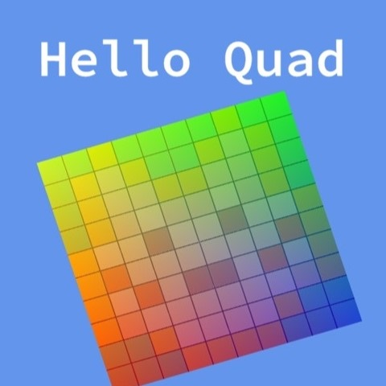

3D Graphics

Hello Quad is an OpenGL graphics demo created for CS250 Computer Graphics II. The purpose of this assignment was to build the foundational rendering features needed to display a textured quad and animate it using shader-based logic. The project focuses on understanding the basic OpenGL rendering pipeline, including vertex buffers, index buffers, vertex arrays, textures, and shaders.
Through this assignment, I was able to learn the beginning steps of 3D graphics programming, which made the project especially exciting for me. At first, the most challenging part was understanding the overall process of how 3D graphics are rendered, from sending data to the GPU to using shaders to create the final image on the screen.
Although this process felt difficult in the beginning, it became much more interesting and enjoyable once I started to understand how vertex data, index data, textures, and shaders work together. I also learned how to send time-based data from C++ to GLSL shaders and use it to control both vertex movement and fragment color animation. This assignment helped me build a stronger foundation for future graphics programming projects.